Nagisa Oshima (1932–2013) set Merry Christmas Mr. Lawrence (1983) in a Japanese POW camp in Java in 1942, where captors and British prisoners collide across language, discipline, and desire. We will ask why its climax scenes strike us so powerfully—and find an answer in binary opposition and its resolution.
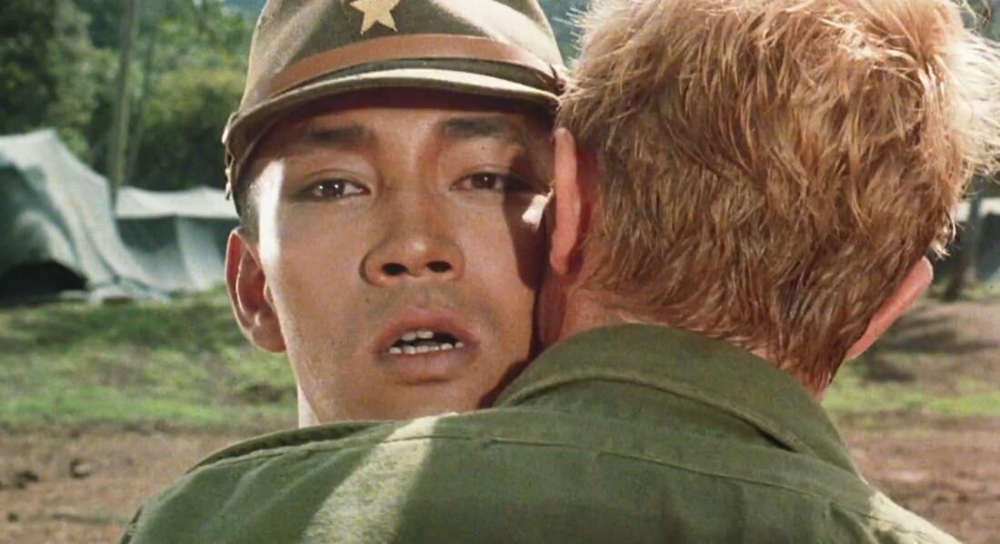
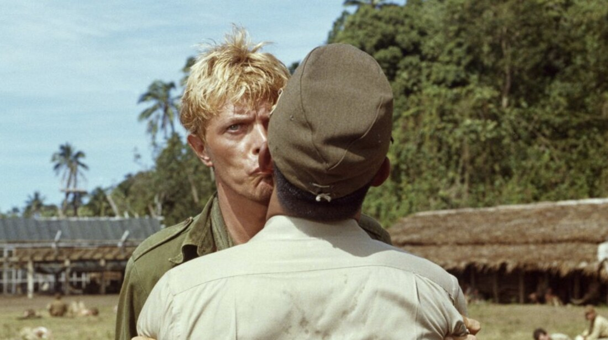
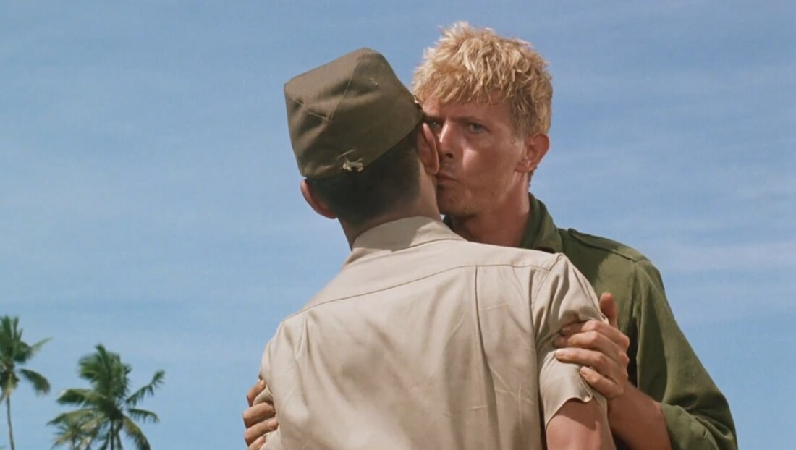
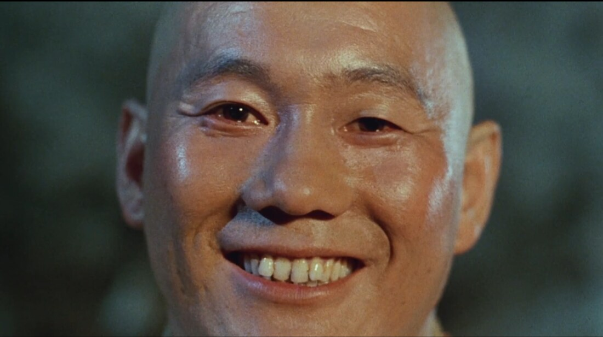
Lévi-Strauss’s key analytic insight in “Asdiwal” is that a myth lines up its binary pairs in a descending scale, with the distance between the poles gradually narrowing, yet never fully closing. The hero “adventures can be seen in a different form, that of a series of impossible mediations between oppositions which are ordered in a descending scale: high and low, water and earth, sea-hunting and mountain-hunting, etc.” (Lévi-Strauss, “Asdiwal,” p. 16). He concludes: “the above two schemata are integrated in a third consisting of several binary oppositions, none of which the hero can resolve, although the distance separating the opposed terms gradually dwindles” (p. 19).
Hold this template in mind for the rest of the deck. Merry Christmas Mr. Lawrence stages exactly three pairs: Kanemoto–De Jong, Yonoi–Celliers, Hara–Lawrence. Each pair runs the same conflict (Japan / Britain, detainer / detainee, man / man, life / death) in a different cinematic code. And, just as in Asdiwal, the distance between the two poles gradually narrows from pair to pair, while resolution remains impossible without death.
Watson (2016) shows that Shakespeare uses binarity as a literary device, both thematically and rhetorically, in the love tragedy Romeo and Juliet. The play, in his reading, “is structured around irreconcilable contraries that determine the tragic outcome.”
The unification of Romeo and Juliet, who come from two feuding families, leads to the death of the two lovers and an eventual reconciliation of the families. In Lévi-Strauss’s vocabulary: the only mediator strong enough to bind Capulet to Montague is a pair of corpses.
Juliet: I cannot sum up sum of half my wealth.
Friar Lawrence: Come, come with me, and we will make short work,
For, by your leaves, you shall not stay alone
Till holy church incorporate two in one.
“Half” prepares us for “two in one,” as the two are forbidden to stay “alone,” and the double use of “come” sets up the antonymic meaning of “leaves,” which lingers in tension with “stay.”
At the outset, we are introduced to a tragedy involving two opposed elements. The film begins with a sequence in which a Korean paramilitary soldier, Kanemoto, is about to be executed for committing sexual violence against a Dutch soldier, De Jong, who had escaped the camp, been recaptured, and jailed. De Jong recounts that Kanemoto initially entered the cell and kindly tended to his wounds, but one night made a sexual advance toward him (or raped him).
Later, Kanemoto is given the opportunity to commit seppuku (honorable suicide), during which De Jong bites his own tongue and joins Kanemoto in death. Two men take their own lives (Kanemoto is forced to do so but pursues his destiny). Oshima gives us some reason to think that a bond was formed between them and that they choose to end their lives at the same time. This narrative introduces the film’s main theme: the story of binary opposition, the cinematic presentation of opposed elements that, after being violently bound together, leads to the demise of both.
In Lévi-Strauss’s template, this is the first and widest pair. The opposition is bound by violence; the “mediation” is rape and seppuku; the resolution is death for both. The poles are still far apart, and the mythic work the film will continue is already declared in this prologue.
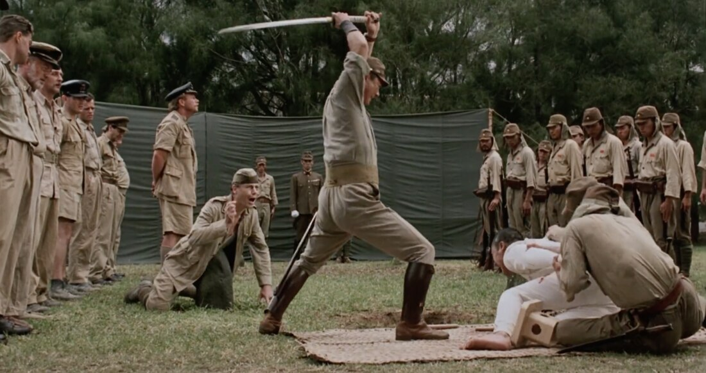
From the moment they are seen together for the first time, Yonoi’s fondness for Celliers is evident. Through Yonoi’s arrangement (a charade of empty bullets, or a failed execution), Celliers is transferred to the prisoner-of-war camp where Yonoi serves as commanding officer. Yonoi’s behavior in the camp becomes ultra-stoic, causing anxiety among the captives. Celliers is informed that Yonoi has been this way since his arrival. Celliers wishes Yonoi would simply share his thoughts with him.
Oshima incorporates narrative elements indicating that both men carry past regrets they cannot forgive themselves for. Yonoi was unable to participate in the 2.26 incident, the failed 1936 political coup led by young Army officers against a corrupt government; all the officers involved were executed. Celliers, in turn, betrayed his younger brother (who had a disability) when they were enrolled at the same boarding school. Celliers decided not to protect his brother during a hazing initiation, an event that changed his brother’s life forever. Both men are haunted by these past failures, and we can view them as overlapping or as a pair.
Structurally, this pair runs the same Japan / Britain conflict as Kanemoto–De Jong, but on a different code: where the first pair worked through institutional violence, this one works through unspoken desire and shared shame. The two poles are closer than in the prologue, yet still untouchable.
The Yonoi–Celliers opposition is the central element of the film and provides significant cinematic tension leading up to the climax. The Kanemoto–De Jong opposition (and its resolution) is mostly recounted viva voce. In the Yonoi–Celliers case, beyond the basic thematic oppositions (Japanese / British, detainer / detainee), Oshima also presents many cinematic depictions of opposition. Each time the two men physically encounter each other, there is always a cinematic barrier that is difficult to surpass: a courtroom podium, a flower that Celliers eats in protest (which leads to his solitary confinement), or swords.
These barriers are precisely Lévi-Strauss’s “middle terms”, the mediator-objects through which myth keeps a binary pair both apart and in contact. The podium mediates by law; the flower mediates by ritual; the swords mediate by code of honor. As long as a mediator stands between Yonoi and Celliers, the binary is sustainable.
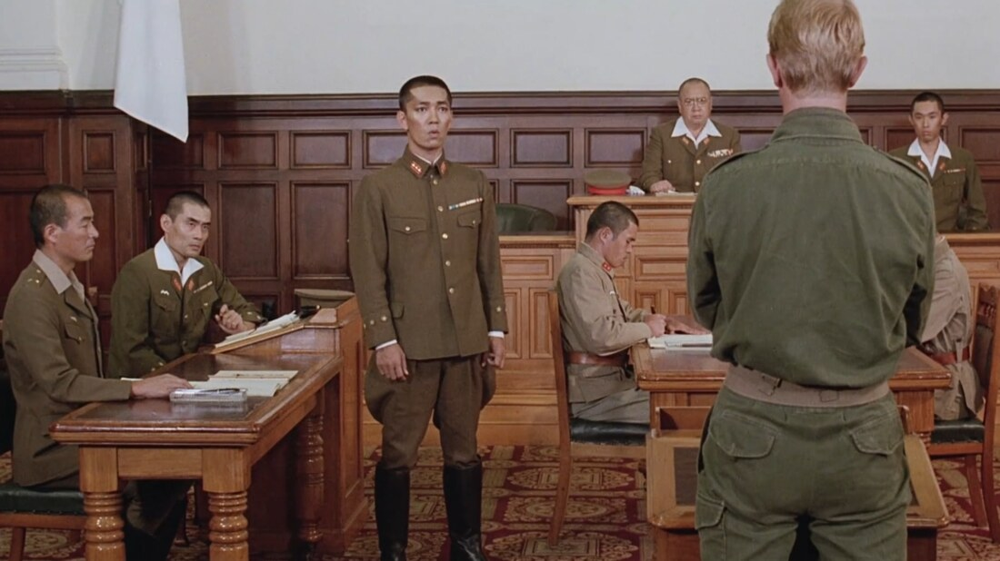
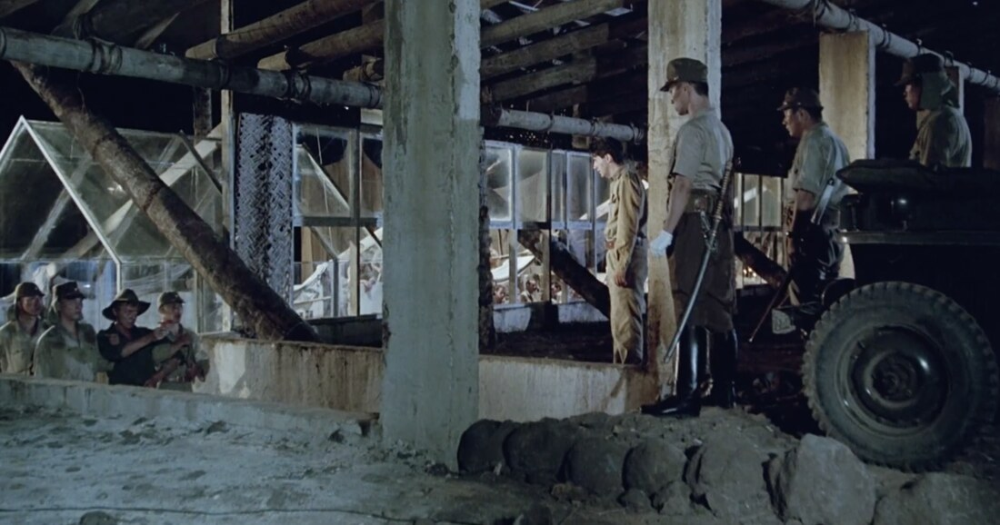
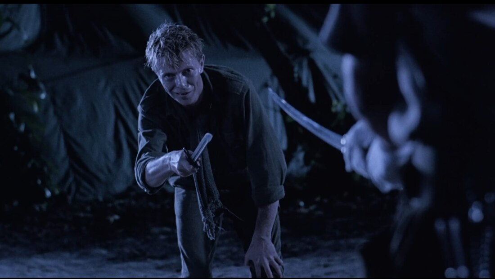
They finally meet without any barrier in the final kiss sequence, a self-sacrificial act to save a marshal whom Yonoi is about to execute (or perhaps to save themselves from the lives they live in regret). This climactic scene, which Bertolucci called “one of the most beautiful kiss scenes in cinema history,” serves as the resolution of the two opposed elements. The long cinematic tension is released through a kiss that lasts for only two cuts, and the abolition of the last mediator leads to the demise of both men. In structuralist terms, the pair did the same logical work as Kanemoto–De Jong but in a far more compressed cinematic code: the distance between the poles has shrunk to the width of one kiss, and that turns out to be exactly the width of a death.
The very last scene of the film is a close-up of Sergeant Hara’s face as he says “Merry Christmas, Mr. Lawrence” to Colonel Lawrence. It is a memorable moment. The Hara–Lawrence pair is the film’s third binary opposition, and its smallest distance. The two have had more opportunities to know each other (they often face the same direction side by side, while Yonoi and Celliers, or Kanemoto and De Jong, are never shown side by side), even though their relationship is heavily conditioned by the war. Hara treats Lawrence cruelly through violence, yet also saves his life on Christmas Day from a planned execution, saying he is Santa Claus. Later, although Hara cannot return the same favor, Lawrence visits him on the night before his execution as a war criminal to offer consolation and compassion.
The close-up of Sgt. Hara’s smile is particularly striking. Hara has learned English during his captivity and speaks to Lawrence in English. It is suggested in their final conversation that Hara has come to the realization that there is no need to serve the Japanese Empire any longer: he is his own man now. He says he is ready to die. Lawrence tells Hara that if it were up to him, he would set him free and send him back to his family. In this moment they are honest and true to themselves. They share memories and talk about that Christmas Day as friends. The barriers that once placed them in opposition have dissolved, and this final shot functions as the resolution, coming just before death. The film ends on this note.
In Lévi-Strauss’s descending scale, this is the bottom rung. The distance between the poles has narrowed almost to nothing: same frame, same direction, shared language, shared memory. And yet, in keeping with the rule of impossible mediation, even this minimum distance cannot be crossed without death. Hara will be executed at dawn. The film’s last image is not a union but a goodbye spoken across a vanishing gap.
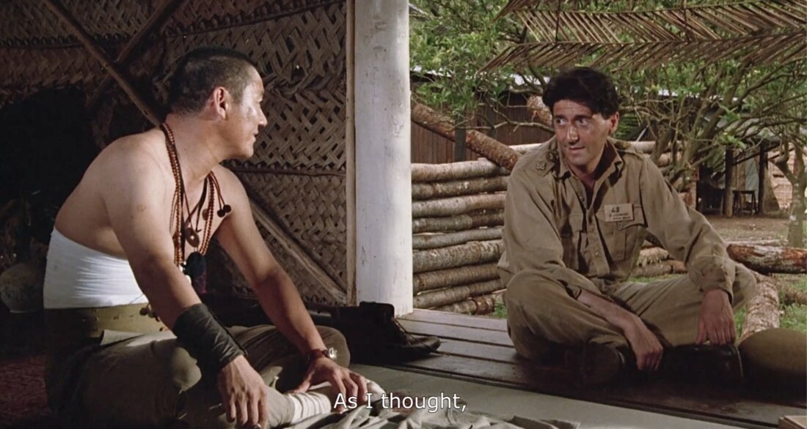
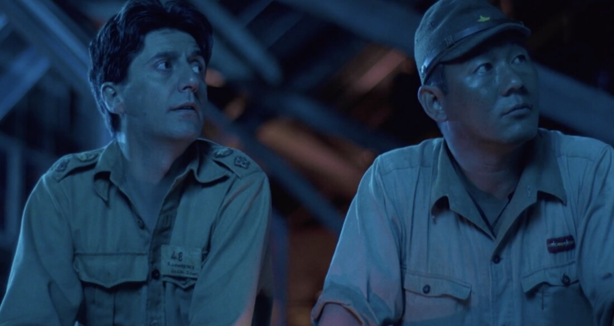
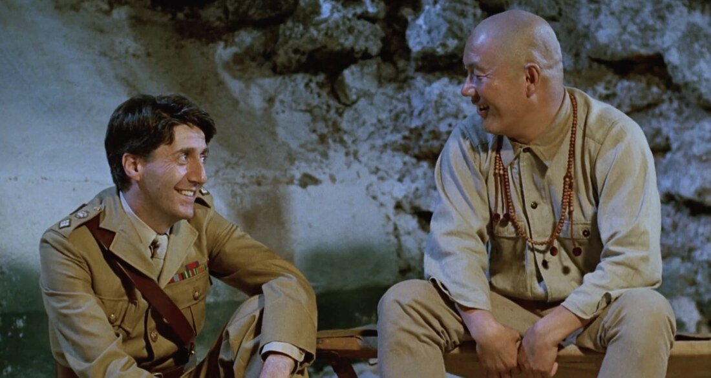
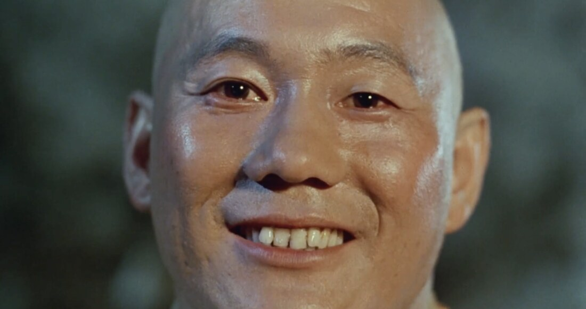
Beyond the dialogue, Oshima gives each of the three couples a recurring visual signature: a way of standing, sitting, or lying in the frame that repeats until we feel it, whether or not we consciously notice. (In Lévi-Strauss’s Mythologiques these repeating image-units would be called mythemes.) Crucially, the three signatures are posed against one another — and it is their interplay, not any single shot, that dramatizes the climaxes.
Left to right: union on the ground (De Jong & Kanemoto); the upright pair divided by a barrier (Yonoi & Celliers); and the kiss that removes it.
The seed. As punishment for the kiss, Celliers is buried upright to the neck, forced down into the very earth that had earlier received De Jong and Kanemoto’s blood. The plane that was a grave becomes a seed-bed. Lawrence says the image aloud: “It was as if Celliers, by his death, sowed a seed in Yonoi, that we might all share by its growth.” A buried body (an image) becomes a planted seed (a line) — what the earth-mytheme has been building since the opening is finally spoken.
The smile. The film ends on Hara behind bars, condemned to hang at dawn. The bars form a grid that both separates and joins, and the camera holds the close-up without a cut, so the smile and the death waiting for him sit in one face at the same time. Hara and Lawrence are the film’s side-by-side pair: the smallest distance, walking the same way. Theirs is a partial friendship (Hara had freed Lawrence on Christmas Eve) that the war never let grow to its full, unlimited form.
His “Merry Christmas, Mr. Lawrence,” learned from Lawrence himself, carries that unfinished friendship past the execution and out into the film’s title. Both closing images say the same thing in different codes — death inverted into a bond — and the audience feels it whether or not they can name why.
The side-by-side pair (Hara & Lawrence) and the final close-up: a smile held in the frame against the death it does not yet name.
Merry Christmas Mr. Lawrence is blessed by two serendipitous (unexpected but welcomed) events during the shoots.
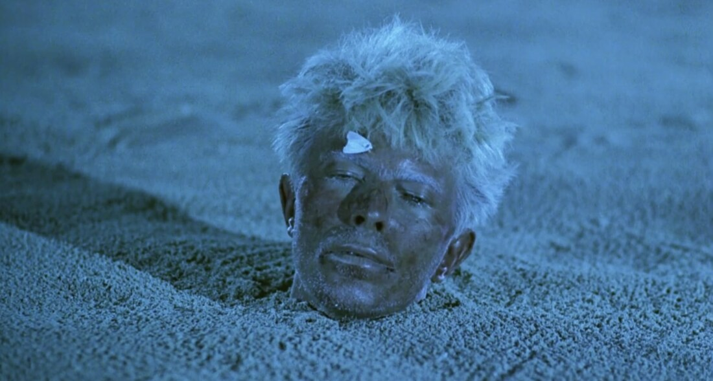
Richard Raskin’s essay confirms that the moth was a genuine accident (Oshima called it “a wonderful accident”; the producer Jeremy Thomas called it “completely coincidental, just the random quality of art”), and that Bowie asked Oshima to keep the take (Raskin 2007, p. 282). Raskin offers three readings, none of which excludes the others:
Each reading reactivates a binary the film has already established: moving / still, living / dead, flower / corpse, Yonoi / Celliers. The moth, in Lévi-Strauss’s vocabulary, is a perfect mediator: it sits exactly on the boundary between every one of those pairs at once. Oshima’s answer to interpretation was characteristic: “A work of art is made without any kind of certainty. It is produced in fear, apprehension and doubt. It isn’t a purposeful, deliberate undertaking that knows exactly where it is going” (Oshima 1995, quoted in Raskin, p. 285).
Some movies have such a strong climax that it feels as though every other component of the film exists solely to build up to that one scene.
The film ends with a miraculous resurrection scene delivered by Johannes, a man who has mentally broken down and believes himself to be Jesus Christ in 1925 Denmark. He criticizes people for their lukewarm faith, drawing inspiration from Kierkegaard’s belief that having faith in the impossible is the true divine miracle. After his niece, who has just lost her mother, asks him to bring her mother back, Johannes praises her childlike but pure faith in a God who can perform such a miracle, and the miracle happens. The film is 126 minutes long, and its entire runtime builds toward this climactic resurrection sequence.
The film, like Merry Christmas Mr. Lawrence, explores themes in binary opposition: old and new schools of Christianity, a man and a woman in love from opposing churches, faith and unbelief, life and death. The final event seems to provide a resolution to these oppositions, although, as in Lévi-Strauss’s account of myth, that resolution comes only by crossing death itself.
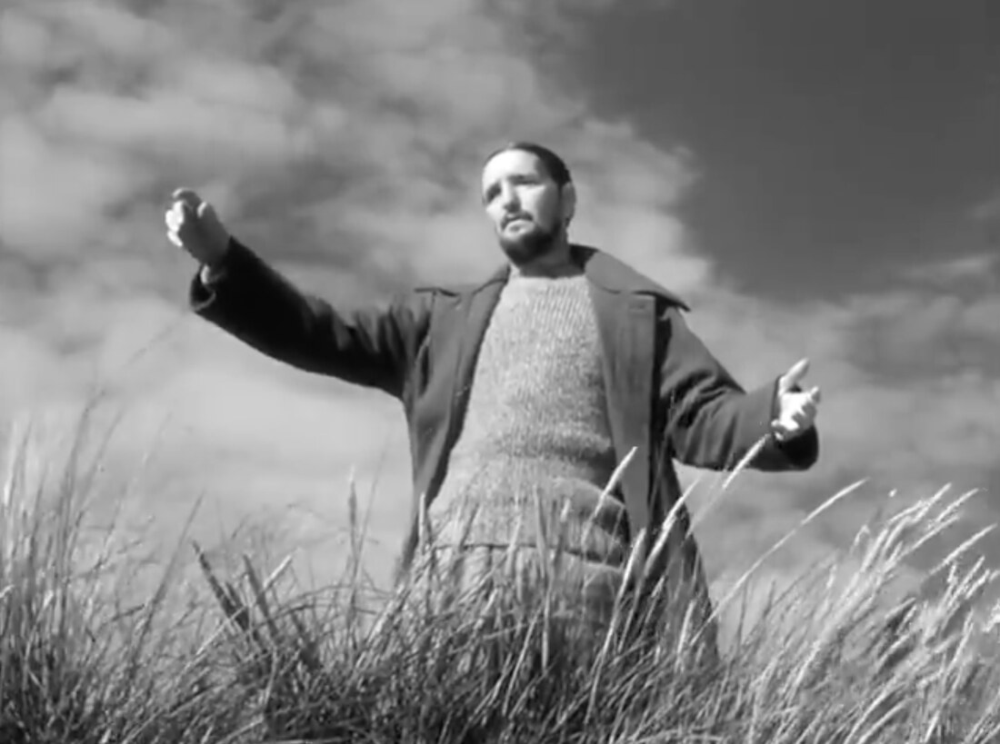
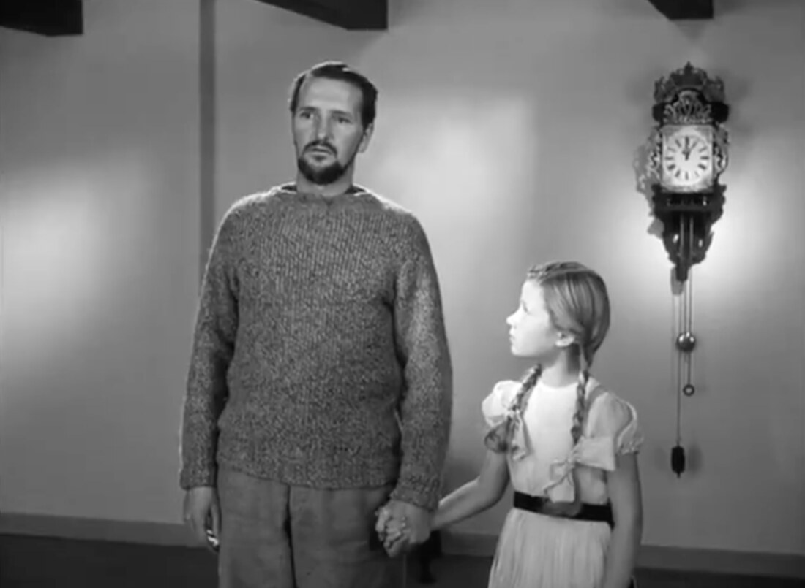
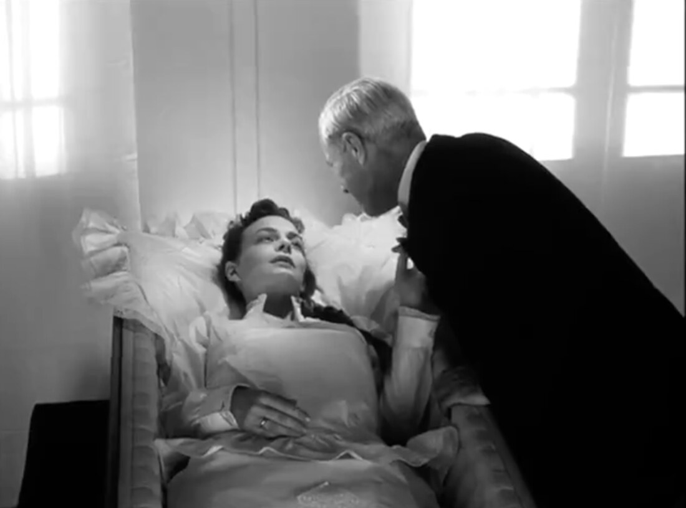
A successful Iranian architect, Badii, drives around Tehran searching for someone to help him with his suicide plan. He gives rides to three people, proposing a job that involves confirming his death at dawn and filling the hole where he plans to take his own life through a self-inflicted drug overdose during the night. These three individuals come from different ethnic backgrounds, and each reacts differently to his proposition, sharing their life stories before refusing Badii’s request. The third man, a Turk, seems to accept the job while still trying to persuade Badii to reconsider. As night falls, Badii lies in the hole and gazes up at the full silver moon shining through a thin layer of clouds. The screen turns black with the sound of an approaching storm.
Instead of the anticipated sequence showing the next morning (which is central to Badii’s proposition), a “making-of-the-scene” sequence begins, featuring Kiarostami and the actor playing Badii as they film the scene. This continues through the end credits. For some viewers this might seem anticlimactic, since there is no climax, or perhaps the climax is the moment when Badii gazes at the moon before his death. It is a memorable anticlimax: where Lévi-Strauss’s mythic logic insists that mediation produces resolution at the cost of death, Kiarostami refuses both. The film withdraws into its own making, and the binary living / dying is replaced by the binary fiction / production.
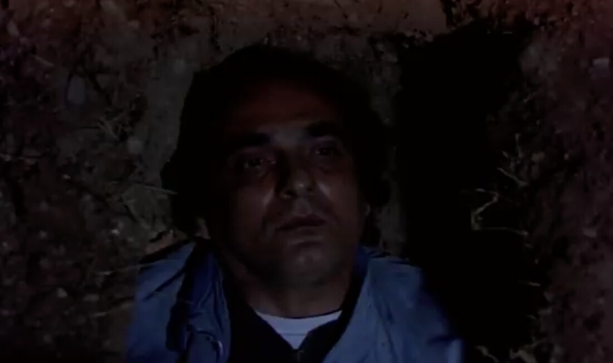